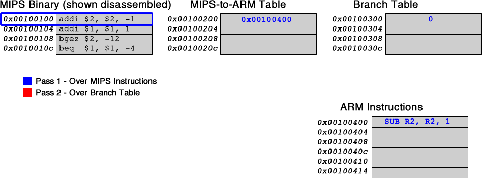

The ARM instruction set varies in quite a few ways from the MIPS instruction set, due to optimizations it has made to allow for fewer control-flow changes and pipeline flushes. ARM has only 15 registers visible at any time, numbered R0 through R14. Of these, R13 is the Stack Pointer, equivalent to MIPS' $sp, and R14 is the Link Register, equivalent to MIPS' return address (ra) register. Additionally, every ARM instruction begins with 4 bits that act as a condition code, determining whether or not that instruction should execute. A typical ARM instruction looks something like this:
This is an arithmetic-and-logic instruction, capable of adding, subtracting, XORing, etc, an immediate value. However, ARM builds in a few facilities for more complex operations in a single instruction.
The Condition field allows the instruction to be executed conditionally. The purpose is to obviate the need for a branch, which introduces many cycles of delay, when simply conditionally executing the following instruction introduces no significant slowdown. This capacity is enabled by the Status register, discussed further below.
The Immediate bit specifies whether the operands are two registers or a register and an immediate value. A 1 specifies an immediate value, while a 0 specifies an additional register.
The OpCode specifies the type of operation to perform on the two operands, such as addition, subtraction, exclusive or, etc.
The status bit determines whether the outcome of this instruction alters the Status register (used for conditionals). This too will be covered in more detail below.
The content of the register specified by Rn is used as the first operand for the ARM instruction.
The output of the instruction is stored into the register specified by Rd.
The instruction uses a 32-bit immediate value. To obtain this 32-bit value, the rotate field is first multiplied by 2 and then used to rotate the immediate value right over 32 bits, with wraparound. This means that only some 32-bit values can be used as an immediate value in a single instruction. An advantage of this method of specifying the 32-bit immediate value is that higher powers of two can be represented easily.
The immediate is an unsigned 8-bit value that is rotated by the rotate field over 32 bits with wraparound, then used as the 32-bit second operand in the operation specified by the instruction.
This instruction format defines ARM data-processing instructions using 2 registers as operands, rather than 1 register and an immediate value. The immediate bit (bit 25) is now set to 0 to indicate the format change, and bits 11-0 now hold the register for operand 2 and a Shift field.
The content of the register specified by Rm is used as the second operand for the instruction, after a shift (specified below) has been performed on it.
These bits specify a shift to be performed on the register Rm prior to the operation. Bit 4 being set to 0 specifies that the shift amount is in bits 7-11. Bit 4 being set to 1 specifies that the shift amount is in (only) the lowest byte of the contents of Rs. Bits 5-6 specify the shift type as shown in the Shift Types table. Rotate right performs a rightward shift in which bits that "fall off" the register are placed entering the opposite side. As a special case, specifying Rotate Right 0 in the shift field shifts Rm rightwards 1, and places the Carry flag from the status register into bit 31.
ARM and MIPS share many similarities in their branching functionality. Both shift the provided offset left 2 and sign-extend, and must take into account the automatic incrementing of the PC. However, ARM processors prefetch 2 instructions in advance, and therefore the PC is set to the address of the branch instruction + 8 when the branch is executed. Additionally, conditional branches require a previously executed instruction to set the condition field. Thus, conditional branches that require only a single instruction in MIPS will require two instructions in ARM. Additionally the link bit, L, determines whether the address of the next instruction should be stored into the link register (R14).
ARM's equivalent to jr (Jump Register) is BX, or Branch Exchange. Despite the different name, it is for our purposes identical to Jump Register, placing the contents of the specified register into the PC.
The CPSR, or status register, controls all conditional execution on the ARM instruction set, as well as various modes of the CPU. The CPSR controls the mode of the CPU (kernel/user), interrupts, and is extensible for future functionality. The portion of the CPSR pertinent to us are the uppermost 4 bits, collectively known as the Condition Code flags.
Any data processing instruction can update the Condition Code flags, and chooses whether or not to do so based on the Status Bit.
Useful for checking a negative result. Equal to bit 31 of the result of the operation that last set it.
Indicates signed overflow during the operation that set it. Meaningless for unsigned numbers, or other data.
If set, this flag indicates that the result of the instruction that last set flags was equal to 0.
The C (Carry) flag is set if the result of an addition is greater than or equal to 232, or if the result of a substraction is positive. It is also altered as a side effect of some shifts.
Every instruction has a conditions field at the beginning, and these are based on the Condition Code Flags discussed above. We will only be needing a subset of the condition codes, shown below.
| Code | Flag Check | Meaning |
| 1110 | No check | Always Execute |
| 0000 | Z Set | Equals (As evaluated with CMP, below) |
| 1010 | N equals V | Greater Than or Equal to (As evaluated with CMP) |
| 1100 | Z clear AND (N equals V) | Greater Than (As evaluated with CMP) |
The ARM instruction set has a wide variety of instructions, of which we will be covering a small subset. The instructions that we will be needing are listed below.
| Instruction | Opcode | Effect |
| AND | 0000 | operand1 AND operand2 |
| OR | 1100 | operand1 OR operand2 |
| ADD | 0100 | operand1 + operand2 |
| SUB | 0010 | operand1 - operand2 |
| MOV | 1101 | operand2 |
| CMP | 1010 | operand1 - operand2, result not saved. (flags only) |
In this assignment you are asked to perform the binary translation of a program from MIPS binary to ARM binary. When translating branches, it is important to recognise that the ARM code may not be the same length as the MIPS code. The additional instruction needed to set the conditional field for conditional branches will result in different lengths.
There are many possible solutions for your binary translator to keep track of the different offsets required for branching and jumping instructions. Given that it may be a complex task, we are suggesting a possible solution --- feel free to implement a different solution as long as it generates correct binary code. In the proposed solution, upon encountering a MIPS branch or jump, the binary translator calculates the absolute target address, and stores it in a branch table. Additionally, as each MIPS instruction is translated into ARM, a separate table tracks the correlation from MIPS address to ARM address. Then, once all ARM instructions have been generated, another loop is done over the branch target table. In the event that a target is encountered, the ARM address of both the branch and target are looked up, and the offset is calculated and stored into the branch.
In the graphical example below, the MIPS binary is assumed to be stored in an array beginning at 0x0010 0100, the MIPS-to-ARM table is an array beginning at 0x0010 0200, the Branch Table begins at 0x0010 0300, and the ARM instructions are placed starting at 0x0010 0400. Corresponding array entries in the MIPS Instructions, MIPS-to-ARM table, and Branch table can all be accessed using offsets from table bases. The algorithm requires two passes, one over the instructions, and one over the Branch Table. The MIPS instructions, the MIPS-to-ARM table, and the Branch Table have corresponding elements at the same offsets, making it easy to find related data.
For instance, during the first pass in the example the value 0x0010 0414 is entered at the entry with offset 0x0c in the MIPS-to-ARM Table to indicate that the ARM branch corresponding to the MIPS instruction at offset 0x0c from 0x0100 0100 appears in address 0x0010 0414 in the ARM Instructions. The first pass also enters 0x0010 020c at the entry with offset 0x0c in the Branch Table to indicate the target ARM address through indirection via the MIPS-to-ARM lookup table at offset 0x0c. Meanwhile, the branch instruction is translated to two ARM instructions which are at addresses 0x0010 0410 and 0x0010 0414. Even though, in the example shown, it appears that the Branch Table could store directly the address of the target ARM instruction to avoid one indirection through the MIPS-to-ARM Table, in general the indirection is necessary because in the case of a forward branch, the ARM address of the target instruction is not known when the binary translator creates the Branch Table entry for the branch.
The second pass traverses the Branch Table. If the entry is zero, this means that the MIPS instruction was not a branch and therefore there is nothing to do. For a non-zero entry, two accesses to the MIPS-to-ARM Table are required to compute the difference between the branch instruction address and the target instruction address in the ARM code. The ARM address of the branch instruction is found at the same offset as the Branch Table entry. The target instruction address is found at the address that is stored in the Branch Table entry. To obtain the actual displacement that appears in the branch, it is necessary to subtract 8 (the PC offset).
The animation above illustrates the operation of an algorithm that correctly translate MIPS to ARM branches. The algorithm shown works as follows:
Many variants on this algorithm are also possible. Feel free to experiment with your own method of branch translation.
Your assignment is to implement a binary translator from MIPS to ARM for a subset of MIPS assembly instructions. This subset is Turing-complete, consisting of arithmetic, logical, and conditional operators such that anything could, theoretically, be computed with this subset.
The following are all of the MIPS instructions that you will need to handle in your binary translator. For many of them, additional constraints will be put on them to ensure simple transition to ARM. In the encoding, s specifies a source register, t a target register, d a destination register, i an immediate value, and h a shift amount.
| Instruction | Encoding |
| ANDI $t, $s, imm | 0011 00ss ssst tttt iiii iiii iiii iiii |
| AND $d, $s, $t | 0000 00ss ssst tttt dddd d000 0010 0100 |
| ORI $t, $s, imm | 0011 01ss ssst tttt iiii iiii iiii iiii |
| OR $d, $s, $t | 0000 00ss ssst tttt dddd d000 0010 0101 |
| ADDI $t, $s, imm | 0010 00ss ssst tttt iiii iiii iiii iiii |
| ADD $d, $s, $t | 0000 00ss ssst tttt dddd d000 0010 0000 |
| SUB $d, $s, $t | 0000 00ss ssst tttt dddd d000 0010 0010 |
| BEQ $s, $t, offset | 0001 00ss ssst tttt iiii iiii iiii iiii |
| BGEZ $s, offset | 0000 01ss sss0 0001 iiii iiii iiii iiii |
| SRA $d, $t, h | 0000 0000 000t tttt dddd dhhh hh00 0011 |
| SRL $d, $t, h | 0000 0000 000t tttt dddd dhhh hh00 0010 |
| SLL $d, $t, h | 0000 0000 000t tttt dddd dhhh hh00 0000 |
| SRLV $d, $t, $s | 0000 00ss ssst tttt dddd d000 0000 0110 |
| SLLV $d, $t, $s | 0000 00ss ssst tttt dddd d000 0000 0100 |
| JR $s | 0000 00ss sss0 0000 0000 0000 0000 1000 |
Issues arise due to the difference in the way that ARM and MIPS handle immediate values. While MIPS uses sign-extended 16-bit values, ARM uses non sign-extended and rotated 8 bit values. To prevent this difference in format from becoming an issue, immediates that appear in the MIPS code are guaranteed to be non-negative values that fit inside 8 bits given some valid rotation. A special case occurs for the MIPS instruction ADDI, where immediate values may also be the 2's-complement negation of any of the above mentioned values.
A single conditional branch in MIPS may have to be translated into 2 instructions in ARM. The first instruction will set the conditions and the second will perform the branch based on the conditions. Additional constraint: for consistency for marking, only CMP should be used to generate conditions for branches (not its arithmetic counterpart, SUB).
The ARM architecture exposes only 16 registers at a time to its instructions. A fully featured binary translator would need to recompute register allocation, which is beyond the scope of this assignment. Therefore, the translator will assume that only the MIPS registers below appear in a valid MIPS program. However, an invalid MIPS program that uses registers not listed in the table below may be used for testing the translator. Any registers not included in the table are not to be translated. If they are encountered while attempting translation, the translator should generate an instruction corresponding to MOV R0, R0. This instruction has no effect, and is the preferred way of expressing a nop(no-operation) on the ARM architecture.
| MIPS Register | ARM Register |
| Reserved for Translator | R0 |
| $at ($1) | R1 |
| $v0 ($2) | R2 |
| $v1 ($3) | R3 |
| $a0 ($4) | R4 |
| $a1 ($5) | R5 |
| $a2 ($6) | R6 |
| $a3 ($7) | R7 |
| $t0 ($8) | R8 |
| $t1 ($9) | R9 |
| $t2 ($10) | R10 |
| $t3 ($11) | R11 |
| $t4 ($12) | R12 |
| $sp ($29) | R13 |
| $ra ($31) | R14 |
You are required to implement the following function:
To obtain testing data, you can write short MIPS programs using the subset of instructions provided, and convert them into binay files using the following commands:
You are also given this file test.s to load MIPS binary from a file and see what ARM instructions your code is generating. The program in test.s takes the name of the file containing the test to load as an argument. Thus, it can be run using spim -file test.s MIPS_BINARY_FILE. The program in test.s prints the instructions using syntax similar, but not identical, to ARM assembly. It prints only values that meet the above spec, producing question marks where no valid interpretation is possible. You are responsible for creating test cases to ensure compliance with the assignment specification. Ensure that you don't submit with test.s attached, or with a main subroutine.
Slides used for the introduction to the lab (.pptx) (.pdf) and in-lab presentation (.pdf)
Some test cases are available in this directory.
Assignments too short to be adequately judged for code quality will be given a zero. Register translation is vital for all instructions. Therefore is is difficult for a binary translator that does not do correct register translation to pass ANY of the grading test cases. Please, ensure proper register translation according to the table above.
There is a single file to be submitted for this lab. The file name should be lab5.s and it should contain only the code for the functions specified above. Make sure to not include a main function in your solution. Use the link provided in the course page for submission.